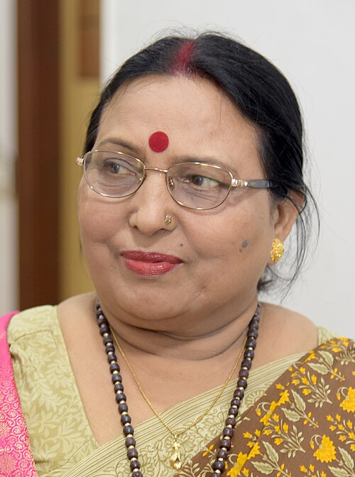
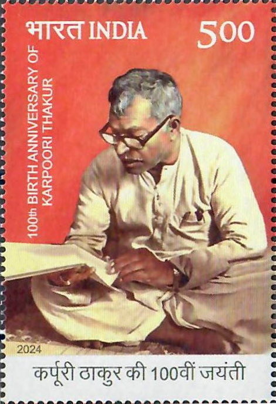
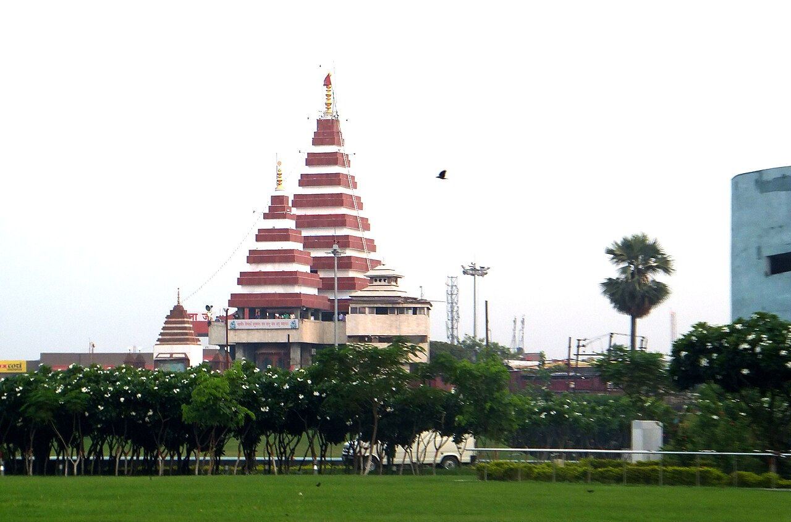

Announced 25 January 2025 (eve of the 76th Republic Day): 139 awards = 7 Padma Vibhushan + 19 Padma Bhushan + 113 Padma Shri (23 women; 13 posthumous). Seven awardees were from Bihar — learn this table cold.
| Name | Award | Field | District / Bihar link |
|---|---|---|---|
| Dr. Sharda Sinha (posth.) | Padma Vibhushan | Art (folk music) | "Bihar Kokila", Chhath geet; based in Patna, born Hulas village, Supaul dist. |
| Sushil Kumar Modi (posth.) | Padma Bhushan | Public Affairs | Former Deputy CM of Bihar; Patna |
| Kishore Kunal (posth.) | Padma Shri | Civil Service | Ex-IPS; Chairman, Mahavir Mandir Trust; Patna |
| Bhim Singh Bhavesh | Padma Shri | Social Work | Journalist for the Musahar community; Bhojpur |
| Hemant Kumar | Padma Shri | Medicine | Kidney-disease treatment & awareness; district not officially confirmed |
| Nirmala Devi | Padma Shri | Art | Sujni embroidery artisan; district not officially confirmed |
| Vijay Nityanand Surishwar Ji Maharaj | Padma Shri | Spiritualism | Jain spiritual leader; district not officially confirmed |

Announced 25 January 2026 (eve of the 77th Republic Day): 131 awards = 5 Vibhushan + 13 Bhushan + 113 Shri (19 women; 16 posthumous; 45 "unsung heroes"; 2 duo cases). Phase-1 conferment by President Murmu at Rashtrapati Bhavan on 25 May 2026 (66 recipients). Three awardees from Bihar, all Padma Shri; CM Nitish Kumar publicly congratulated them (26 Jan 2026).
| Name | Field | Note |
|---|---|---|
| Bharat Singh Bharti | Art (folk) | 90-year-old folk artist; Bhojpur region |
| Bishwa Bandhu (posth.) | Art | Cultural figure ("Vishwabandhu"); district not officially confirmed |
| Gopal Ji Trivedi | Science & Engineering | District not officially confirmed |

One glance at every dated Bihar honour of the exam window — BPSC loves "when was X announced" one-liners.
| Honour | Person(s) | Key Fact | Date |
|---|---|---|---|
| Bharat Ratna 2024 (posth.) | Karpoori Thakur | "Jan Nayak"; ex-CM; Pitaunjhia, Samastipur | Announced 23 Jan 2024; conferred 30 Mar 2024 |
| Padma Vibhushan 2025 (posth.) | Sharda Sinha | Bihar Kokila; Chhath geet; Patna (born Supaul) | 25 Jan 2025 |
| Padma Bhushan 2025 (posth.) | Sushil Kumar Modi | Public Affairs; former Deputy CM; Patna | 25 Jan 2025 |
| Padma Shri 2025 ×5 | Kishore Kunal (posth.), Bhim Singh Bhavesh, Hemant Kumar, Nirmala Devi, Vijay Nityanand Surishwar Ji Maharaj | Civil Service / Social Work / Medicine / Art (Sujni) / Spiritualism | 25 Jan 2025 |
| Padma Shri 2026 ×3 | Bharat Singh Bharti, Bishwa Bandhu (posth.), Gopal Ji Trivedi | Folk art (Bhojpur) / Art / Science & Engineering | 25 Jan 2026; Phase-1 conferment 25 May 2026 |
| Khel Samman 2025 (Bihar state) | 153 para athletes + 24 coaches | Rajgir Sports Complex; Shailesh Kumar ₹75 lakh, Gauri Kumari ₹10 lakh | Oct 2025 |
| Item | Value | As-Of / Note |
|---|---|---|
| Bharat Ratna instituted | 1954; first: C. Rajagopalachari, S. Radhakrishnan, C.V. Raman | Max 3 per year; Art. 18(1) — not a title |
| Padma Awards instituted | 1954 — Vibhushan / Bhushan / Shri | Announced R-Day eve; President confers |
| Padma eligibility exception | Govt servants excluded — except doctors & scientists | Committee headed by Cabinet Secretary |
| Padma 2025 totals | 139 = 7 + 19 + 113 | Bihar: 7 (incl. 1 Vibhushan, 1 Bhushan) |
| Padma 2026 totals | 131 = 5 + 13 + 113 | Bihar: 3 (all Shri); 16 posthumous overall |
| Khel Ratna | 1991-92; ₹25 lakh; first: Viswanathan Anand | Renamed Major Dhyan Chand Khel Ratna, Aug 2021 |
| Arjuna Award | 1961; ₹15 lakh | 2024 list: 32 sportspersons (17 para) |
| National Sports Day | 29 August | Dhyan Chand's birth anniversary |
| Bharat Ratna in 2025-26 | None announced (up to 15 Jul 2026) | Last set: 2024 (5 recipients) |
